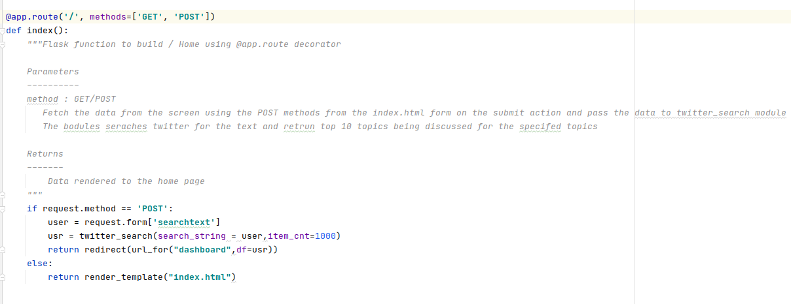
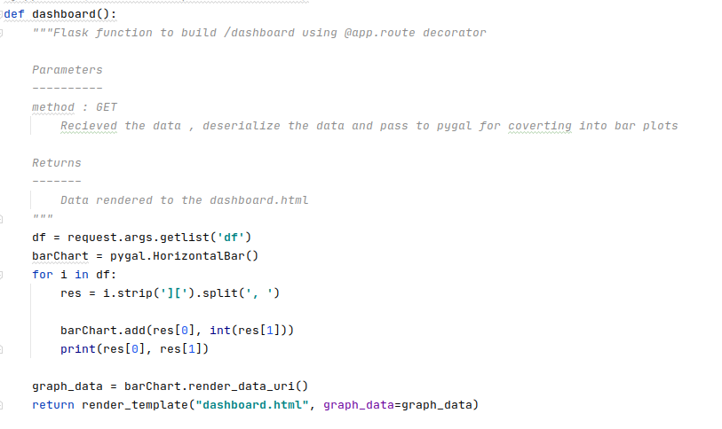
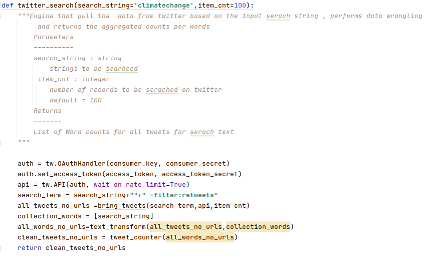

Code deep dive¶
Web Integration Library¶
- Home Page
- 
Flask acts as a bridge between HTM front end and the python processing engine to get the search string .Pass to Twitter function for data cleaning and data aggregation and send the aggregated data to the dashboard flask function.
- Dashboard
- 
The dashboard function receives the aggregated data , deserializes it, and renders it into a bar chart. The chart is rendered back into the HTML front end.
Twitter Searcher Library¶
- Twitter Cleansing and Data aggregation
- 
This library takes the search string , search on Twitter using the API call.The data returned is cleaned.Urls removed.Data separated to words and aggregated.The data is sent back to the flask utilities.
You can find more details on the function @ Module Index